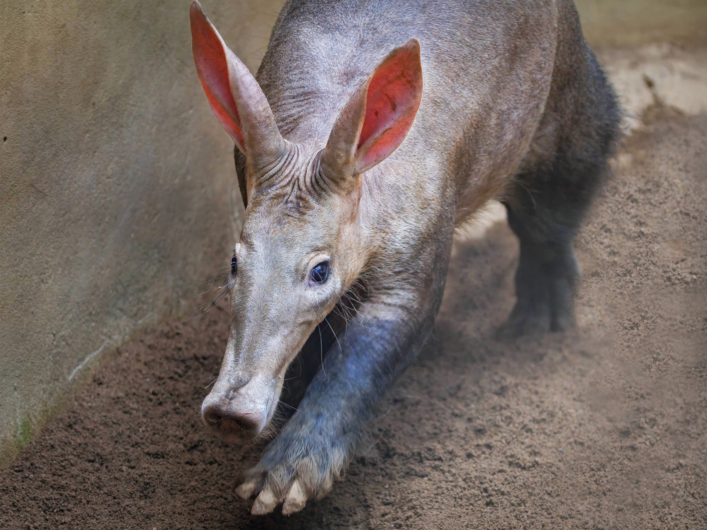

Aardvark
Nocturnal insectivore from sub-Saharan Africa.
- Species: Orycteropus afer
- Diet: Ants & termites
- Size: 3.3-4.9 ft
- Weight: 88-143 lbs
- Life span: 10-23 years
- Habitat: Woodlands, grasslands
- Found: Sub-Saharan Africa
- Can be pet: No
Trivia: Aardvarks can eat up to 50,000 ants in one night.